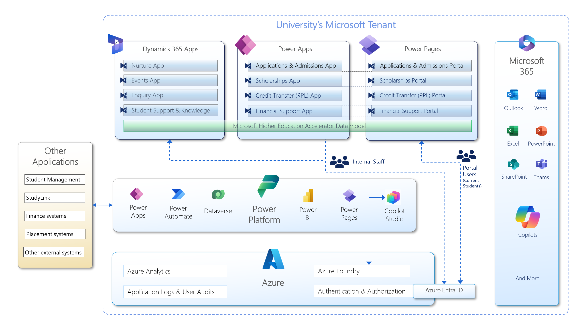

How Tarelium fits into the Microsoft ecosystem
Each Tarelium accelerator is delivered as a fully managed service and hosted within your institution's own Microsoft tenant - giving you full data sovereignty with zero infrastructure overhead.

Understanding the Architecture
The diagram above shows how every component of the Tarelium platform connects within your university's Microsoft tenant. Here's what each layer does and why it matters.
Dynamics 365 Apps
The staff-facing CRM layer that powers four of the Tarelium accelerators. The Nurture App manages prospective student pipelines, the Events App handles campus events and registrations, the Enquiry App centralises inbound student enquiries, and the Student Support & Knowledge App manages support cases and knowledge resources.
Power Apps
Model-driven apps used by internal staff to manage the remaining four accelerators. The Applications & Admissions App handles end-to-end student applications, the Scholarships App manages scholarship programs, the Credit Transfer (RPL) App processes recognition of prior learning, and the Financial Support App manages student financial assistance.
Power Pages
Secure, branded self-service portals that students and applicants interact with directly. Each portal mirrors its corresponding staff-facing app - students submit applications, apply for scholarships, request credit transfer, and access financial support entirely through these authenticated portals without needing to contact staff.
Microsoft Higher Education Accelerator Data Model
A shared, standardised data model that spans Dynamics 365, Power Apps, and Power Pages - ensuring every accelerator speaks the same data language. Built on and extending the Microsoft Higher Education Accelerator, it aligns with HESA standards and provides a consistent student record that all apps read from and write to.
Power Platform
The integration, automation, and data backbone of the entire solution. Power Automate orchestrates complex multi-step workflows across all accelerators. Dataverse is the central data store for all application data. Power BI delivers real-time analytics and institutional dashboards. Copilot Studio powers AI-assisted experiences for both staff and students.
Azure
The cloud infrastructure layer that underpins security, AI, and observability across the platform. Azure Analytics enables advanced data workloads. Azure Foundry provides the AI model and agent runtime for Copilot features. Application Logs & User Audits deliver full compliance traceability. Azure Entra ID secures authentication for all staff and student users.
Microsoft 365
Tarelium is deeply embedded in the Microsoft 365 tools your staff use every day. Automated notifications and correspondence flow through Outlook, documents are stored in SharePoint, approval workflows surface in Teams, and the Microsoft Copilot family brings AI assistance directly into staff workflows - no context switching required.
External Integrations
Bidirectional connectors to the systems your institution already relies on. Student Management Systems keep enrolment records in sync, StudyLink enables government loan and allowance verification, Finance Systems handle payment processing, Placement Systems coordinate work-integrated learning, and additional external systems can be connected via the Power Platform connector framework.